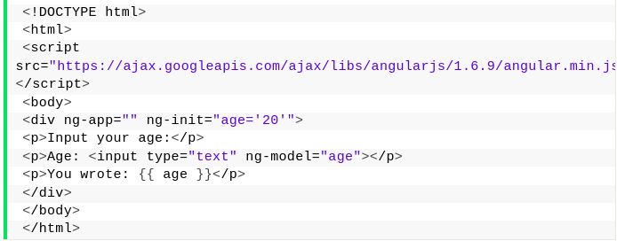

São aplicações que rodam diretamente do navegador sem que haja consumo de armazenamento do dispositivo conectado a aplicação. Esse tipo de sistema possui certas limitações que não existem em aplicativos instalados, como por exemplo o uso dele ser possível se o usuário estiver conectado a internet. A maioria possui um design responsivo podendo se adaptar ao formato dos smartphones também. São exemplos desse tipo:
Sites dinâmicos estão espalhados pela rede e cada um deles possuindo sua própria tecnologia. Atualmente temos diversas opções para construção desse tipo de site e uma das tecnologias que os desenvolvedores mais recorrem é o uso do JSP.
Imagine você ter um site com várias páginas e em todas delas você precisar ficar reescrevendo todo o HTML e CSS? Teoricamente isso é possível, mas quando estamos falando de um site que possui milhares de páginas isso ficaria inviavel não é? E quando quiséssemos reformular todo o nosso site? É para isso que servem os sites dinâmicos. Eles possíbilitam que suas páginas em HTML possam ser personalizadas de modo mais simples, com apenas um arquivo sendo usado como "template" e todas as outras páginas construídas automaticamente importariam todas as características desse template sem a necessidade de você ficar reconstruindo página por página.
É aí que entra o nosso amigo JSP, uma vez que podemos utilizá-lo para integrar as páginas HTML. Não somente isso, com ele nós podemos também integrar nosso site a um banco de dados. A partir do JSP podemos transformar o que seria um site simples em um site totalmente dinâmico e possibilitando até mesmo que codigos em JAVA rodando diretamente de um navegador.
A grosso modo são apenas 5 tags utilizadas, mas as principais na hora de fazer um site dinâmico são
<%@ page atributo=”valor” %><%@ include file=”pagina.jsp” %><%@ taglib prefix = "prefixo" uri = "taglib.tld" %>Outras tags também são muito utilizados, mas com essa tag nós já podemos criar todo um conceito de herança de características de HTML e CSS entre as páginas de nosso site. Ainda não entendeu? Vou trazer um exemplo bem simples
Imagine você querer ter uma NAVBAR em seu site. Sim, isso mesmo, essa barra no topo onde você consegue ter um menu inteiro para seu site. Mas ao invez de em todas as páginas você adicioná-la, você agora pode criar um único arquivo HTML com sua NAVBAR dentro e conseguir incluí-la em todas as outras páginas existentes apenas com a tag include. Isso facilita em muito o trabalho do desenvolvedor
Angular é uma plataforma e framework para construção da interface de aplicações usando HTML, CSS e, principalmente, JavaScript, criada pelos desenvolvedores da Google. Ele possui alguns elementos básicos que tornam essa construção interessante.
Dentre os principais, podemos destacar os componentes, templates, diretivas, roteamento, módulos, serviços, injeção de dependências e ferramentas de infraestrutura que automatizam tarefas, como a de executar os testes unitários de uma aplicação.
Angular nos ajuda a criar Single-Page Applications com uma qualidade e produtividade surpeendente! Alguns outros pontos dessa plataforma que merecem destaque são o fato de que ela é open source, possui uma grande comunidade, existem várias empresas utilizando e tem muito material de estudo para quem deseja se aperfeiçoar.
Basicamente, a arquitetura do Angular é baseada em componentes, que funcionam como blocos de construção adicionados conforme a necessidade de utilização. Isso torna o desenvolvimento da aplicação mais flexível, pois facilita a reutilização de códigos sem a necessidade de escrevê-los novamente.
Em termos de conceito temos praticamente uma semelhança muito grande com JSP, tendo em vista que aqui também podemos incluir codigos do Angular diretamente dentro do HTML proporcionando assim uma facilidade ao construir as páginas dinâmicas. É possível também manter o sistema de "herança" entre as páginas HTML, fazendo com que a economia de tempo e aumento da produtividade seja enorme. É como supracitado, uma vez que você não fica reescrevendo os códigos novamente e pode reutilizá-los dentro do seu projeto varias e varias vezes, você ganha tempo não apenas na construção como também na futura manutenção do projeto.
Abaixo um exemplo de código com o AngularJS
Perceba como é fácil incluir trechos de código no próprio HTML. Com esse código, é possível através de uma entrada de dados, obter a idade do usuário e printá-la no HTML.